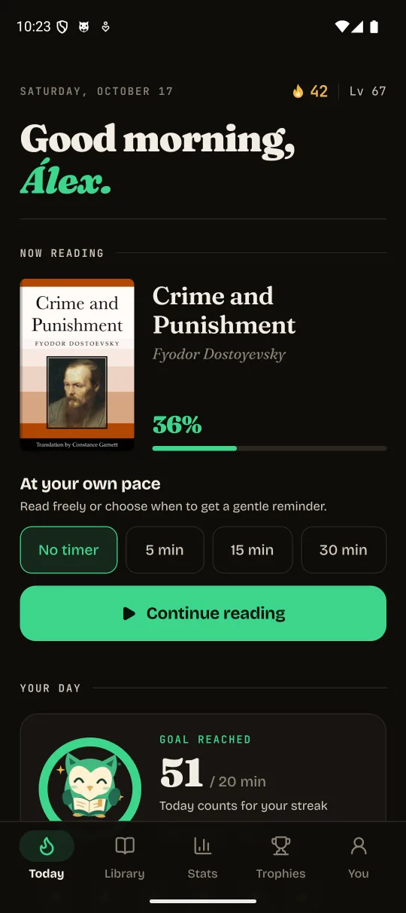
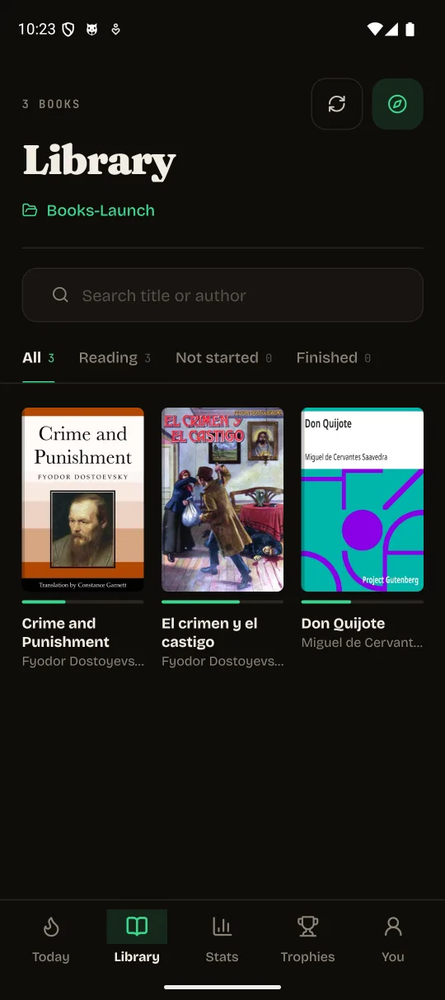
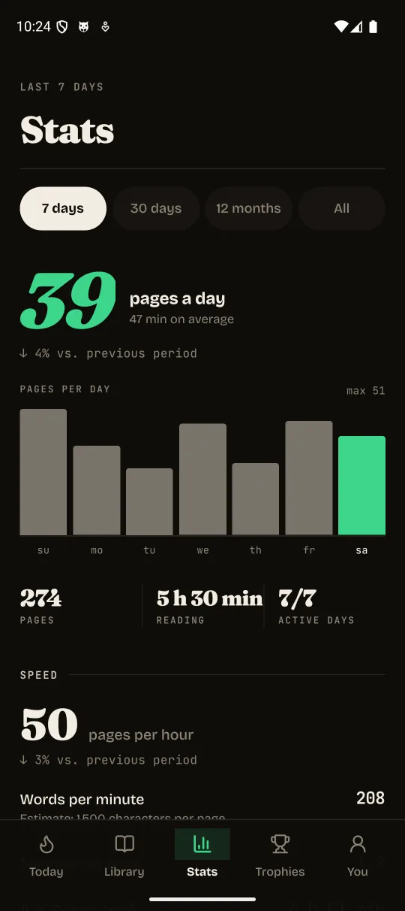
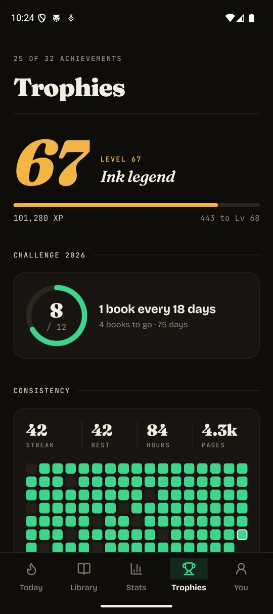
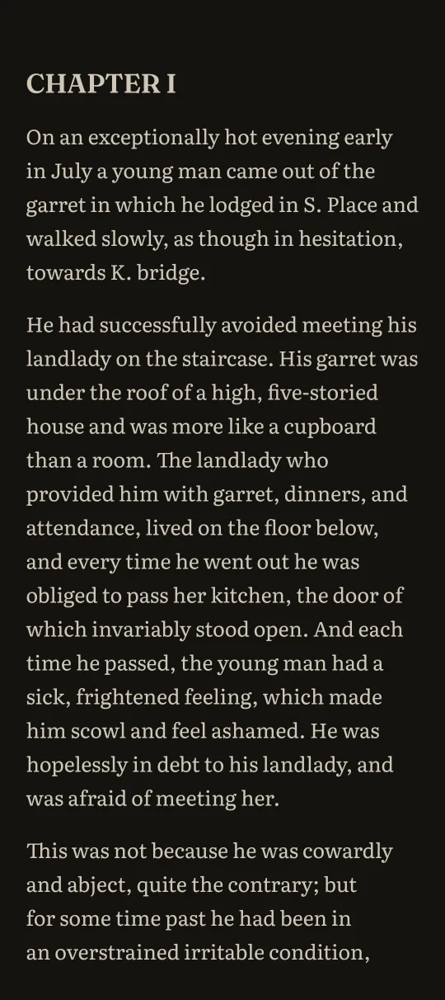
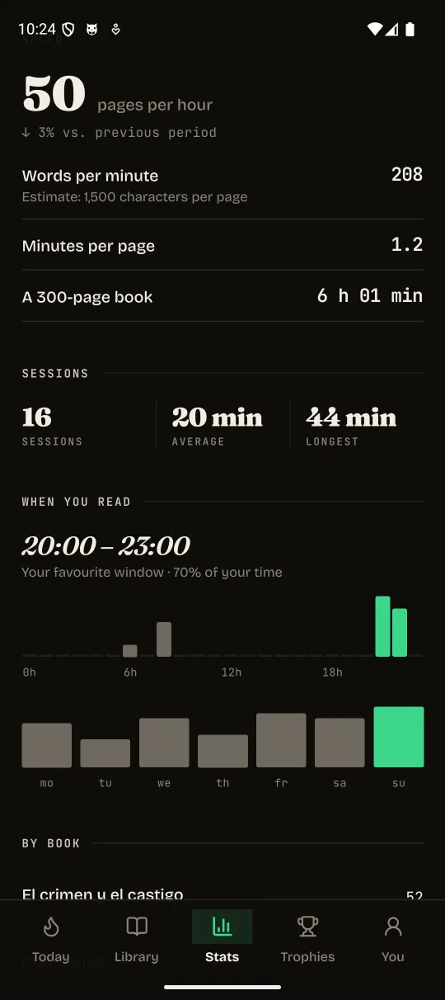
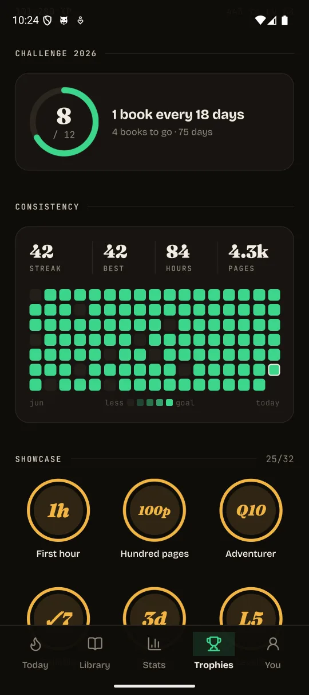

Your next obsession has pages
An Android reader for trading five minutes of scrolling for one more chapter. Your books, little challenges and a reason to come back.
Free · Open source · No account

Meet Ávido in 33 seconds
Same tricks
New winner
You
Silicon Valley learned how to keep you coming back. Streaks, rewards and that little urge for just a bit more turned your attention into their business.
What if that urge brought you back to a book? Ávido puts challenges, streaks and rewards to work for your reading. Each session adds progress, XP and a reason to pick up where you left off.
The habit design, explainedChange who wins
Your book is waiting
A few pages, at your pace
A story that moves with you
Let the urge to come back lead to a story you chose. You decide when to start and when to stop.
Open a book
Find your rhythm
EPUB / PDF / TXT / MD
- All your books in one place
- Choose a folder and read EPUB, PDF, TXT or Markdown. Your position is saved so you can pick up where you left off.
- Progress you can feel
- XP, levels, streak freezes, three daily quests and 32 achievements. A little encouragement for that big story.
- Comfort, on your terms
- Four reading typefaces, six themes, adjustable type and margins. E-ink mode and reading with the controls out of sight.
- Always another book
- Discover classics through Project Gutenberg. Download them, then keep reading offline. Check their copyright status in your country.
Every page counts

All your books, within reach
Search by title or author and pick up your unfinished reads.

Watch your habit take shape
Pages per day, reading time and your favourite reading hours.

Celebrate every step
Streaks, levels, achievements and your own yearly challenge.

Read your way
Choose your typeface, theme and margins.

A closer look at your sessions
See how long you read and which hours work for you.

Your achievements, one by one
See what you have earned and what is still waiting to be unlocked.
Your library
Your private life
A library needs books. It doesn’t need an advertising profile of you.
- No account
- Open the app and read. No sign-up or sign-in.
- No ads or trackers
- No interruptions to sell you something. No tracking your reading to turn it into a business.
- Progress on your device
- Your books, your place and your achievements stay on your device. You don’t have to hand them to a cloud to enjoy them.
Finding and downloading classics through Discover connects to external services. The guide explains the full details of data, permissions and device backups.
Read how privacy worksYour next chapter
starts here
The download is an APK file that installs directly on your Android device.
Download for AndroidBrowse all versionsDownload the APK
Tap Download for Android. If your browser asks, confirm that you want to save avido.apk.
Open it and install
Open the downloaded file. If Android asks, go to Settings and allow installs from that browser or file manager. Return and tap Install. You can turn that permission off afterwards.
Choose your books
Open Ávido and select your books folder. No books yet? Head to Discover to find a classic.
Before you turn the page
Is it really free?
Yes. The source is released under the MIT license. Use it, study it, change it, contribute. Books have their own copyright terms.
Does it work offline?
You can read books already on your device without an internet connection. Searching and downloading in Discover requires internet.
Do I have to keep a streak?
You decide how to read. Reading starts without a timer; you can choose a 5, 15 or 30 minute reminder. Achievements accompany your progress without blocking the reader.
What about iPhone?
Ávido is currently available for Android.
How do I update?
Download the new version and install it over the existing app. Avoid uninstalling to keep your progress. If Android won’t accept the update, check that version’s release notes.